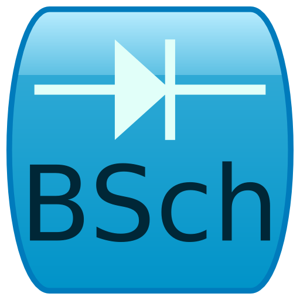
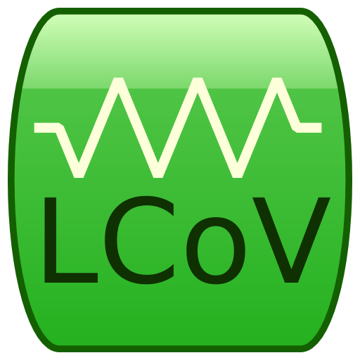

Qt-BSch3V Modified
Qt-BSch3V Modified とは
Qt-BSch3V Modified は無保証の回路図エディタです。オリジナルの水魚堂の岡田仁史様のQt-BSch3VをMac OS Xで使いやすいように若干の改造を施し、Qt 4.8へ対応させたものです。古いQt3由来のコードを取り除いてありますので、新しいOSでより安定した動作が期待できます。ソースコードだけでなくビルド済みのバイナリも頒布しています。またGPL v3.0以降でライセンスされていますので自由に改造することが可能です。現状ではあまりまだまだ不安定ですが、今後改善して行く予定です。
ファイル構成
| gpl-3.0.txt | GNU General Public License 本文 |
| Readme.html | このドキュメント |
| qtbsch3v.app | Qt-BSch3V 回路図エディタ |
| qtlcov.app | ライブラリエディタ |
 qtnlist.app qtnlist.app | ネットリスト＆部品リスト作成ソフト（テストが特に不十分） |
 qtnut.app qtnut.app | 部品番号振り付けソフト（テストが特に不十分） |
| doc/* | ドキュメントと、Qt-BSch3Vの元のドキュメント。 |
| src/* | 各種ソースコード |
ドキュメント
現時点ではQt-BSch3V Modified用の使用方法を解説したドキュメントは用意されていません。水魚堂のWindows版BSch3Vのドキュメントが参考になるかと思いますが、完全に同一ではありません。Qt-BSch3Vのドキュメントであるdoc/original-docに同梱されているドキュメントも参考になるかと思います。開発環境
次の環境で開発および動作確認を行っています。Mac OS X 10.7.4 Lion + Qt 4.8.2
リリースビルドは以下のように行っています。まず、srcフォルダにある圧縮ファイルをその場にすべて展開してください。次にbuildscripts内にあるファイルをディレクトリの外にシンボリックリンクを張ります。 そうすると次にようなディレクトリ構成になるはずです。
BSch3VShared/ build.sh@ -> buildscripts/build.sh buildscripts/ hg.sh@ -> buildscripts/hg.sh makedist.sh@ -> buildscripts/makedist.sh qtbsch3v/ qtlcov/ qtnlist/ qtnut/次にドキュメントフォルダをDocumentsとして中身を何か入れておきましょう。ここまで来たら
makedist.sh versionと打つことで、コンパイルが行われます。リリースビルドはこの様に作っていますが、普段はQt Creatorを用いて開発しています。
なお、使用しているQtは
./configure -prefix /usr/local/Trolltech/Qt-4.8.2 -opensourceの設定でビルドしてあります。
ライセンス
GPLの本文はgpl-3.0.txtにあります。なお、著作権はオリジナルの水魚堂の岡田仁史様と改造したStorkに帰属します。またGUIツールキットであるQtの著作権はNokia Corporationに帰属します。Copyright © 2010 Stork <storklabあっとgmail.com>
Copyright © 2006 Suigyodo <hitoshiあっとsuigyodo.com>
Copyright © 2010 Nokia Corporation
このプログラムはフリーソフトウェアです。あなたはこれを、フリーソフトウェア財団によって発行されたGNU 一般公衆利用許諾書(バージョン3か、 それ以降のバージョンのうちどれか)が定める条件の下で再頒布または改変することができます。
このプログラムは有用であることを願って頒布されますが、*全くの無保証 *です。商業可能性の保証や特定目的への適合性は、言外に示されたものも 含め、全く存在しません。詳しくはGNU 一般公衆利用許諾書をご覧ください。
あなたはこのプログラムと共に、GNU 一般公衆利用許諾書のコピーを一部受け取っているはずです。もし受け取っていなければ、<http://www.gnu.org/licenses/> をご覧ください。
ソースコードについて
ソースコードはすべてsrcフォルダの中にあります。Qt-BSch3V Modifiedをさらにフォークして改造される場合は適宜、展開して使用してください。QtはNokiaのサイトからSDKをダウンロードしてください。なお、再頒布の際にはGPL v3以降に従い、ソースコードを含める等の適切な対応をとってください。Qtのソースコードは含めていません。必要な場合はNokia FTPよりダウンロードしてください。連絡先
バグ報告、その他質問事項は以下のアドレスにお願いします。ただし、本ソフトウエアは無保証ですので必ず何かしらの対応をとるとは限りません。Stork <storklabあっとgmail.com>
更新履歴
-
0.47.008 (2012年06月)
- 軽微な変更を行いました．
- Qtを4.8にバージョンアップしました．
- qtnutとqtnlistのバイナリを含めるようにしましたが，しばらくメンテナンス予定はありませんので，QtBSch3Vバージョンアップで上手く動かなくなるかもしれません．
-
0.47.007 (2011年11月)
- 画像書き出しと印刷のフォントと色の問題を修正しました。
-
0.47.006 (2011年10月)
- 部品の名前を変更すると落ちるバグを修正しました。
- Deleteキーで部品の削除ができるようになりました。
- qtlcovで編集したライブラリを再起動せずに読み込めるようになりました。
-
0.47.005 (2011年8月)
- Qt 4.7.3に対応
- qtnutとqtnlistのバイナリの頒布を取りやめました。ソースは含まれていますが、使える保証はありません。作者がめったに使わないこととWindows版への追従の障害となることからしばらくは再開するつもりはありません。
- 64bit Cocoaアプリケーションになりました。今まではCarbonでしたが、Cocoa化されたことで将来のMac OS Xでも問題なく動くことが期待されます。（たしかCarbonは廃止予定だったはずです）
- ソースのリファクタリングをしています。機能的な変化はたいしたことありませんが、Q3Supportが必要なくなったことによりバイナリサイズが減少しています。
- GUIのリファクタリングが今回でおしまいで、次回からWindows版のアップデートを取り込んでいく予定です。
-
0.47.004 (2010年9月)
- 印刷の用紙設定ができない問題を修正。
- PNG書き出しの際にカラーにできない問題を修正。
- よりMacらしいアプリケーションに。(Linux等との互換性は失われていないはずです。)
- Linuxでビルドできるように修正（Ubuntu 10.04 Netbook Edtionで確認）
-
0.47.003 (2010年3月29日)
Qt3Support の排除を進め、よりMacらしいアプリケーションに。(Linux等との互換性は失われていないはずです。) -
0.47.002 (2010年2月8日)
ライブラリエディタ等を含んだ最初のリリース。 -
0.47.001 (2010年2月1日)
とりあえず公開。ライブラリエディタ等は含まず。